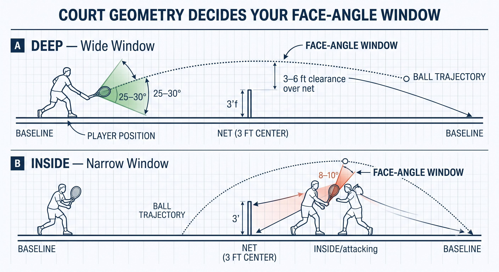
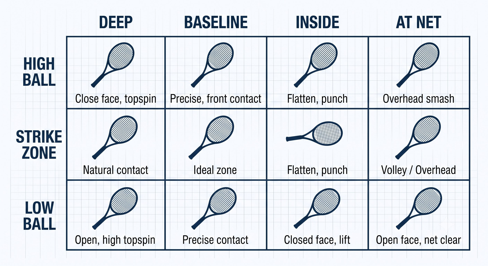

Chương 1: Vấn Đề
(Bản dịch tiếng Việt của Chapter 1 trong Sổ Tay Quần Vợt Thống Nhất)
Vị Trí Sân và Độ Cao Bóng Quyết Định Góc Mặt Vợt Của Bạn
Trước khi bạn chọn cách cầm vợt, kiểu vung, hay độ căng cánh tay — sân và trái bóng đã quyết định rồi. Hai yếu tố đó quyết định đúng một thứ bạn buộc phải làm được ở mỗi cú đánh: góc mặt vợt tại thời điểm tiếp xúc.
Bạn không tự chọn góc mặt vợt. Vị trí sân và độ cao của bóng quyết định góc mặt vợt bạn bắt buộc phải mang đến để giữ bóng trong sân.
— Henry Phạm

Hình 1.1
Phương Trình Cốt Lõi
Mọi cú đánh trong quần vợt đều giải cùng một bài toán cố định: lưới cao 3 feet (3.5 feet ở cột), vạch cuối sân không hề dịch chuyển, và trái bóng sẽ đến ở một độ cao, một tốc độ nhất định. Không điều nào trong số đó có thể thương lượng. Thứ duy nhất bạn mang vào phương trình là những gì cơ thể và cây vợt của bạn làm khi trái bóng đã bay tới.
Sân và trái bóng cho bạn biết ba điều trước khi bạn kịp vung vợt:
– Bạn đang đứng ở đâu: sâu sau vạch cuối sân, ngay trên vạch cuối sân, tiến vào trong sân để tấn công, hay đã đứng ở lưới.
– Bóng đến cao bao nhiêu: thấp, trong vùng đánh lý tưởng, hay cao.
– Bóng đến nhanh cỡ nào: nhanh (giao bóng, cú đánh mạnh), trung bình (nhịp rally), hay chậm (lob, drop shot).

Hình 1.2
Ghép vị trí của bạn với độ cao bóng lại, bạn có một “cửa sổ” — một khoảng góc mặt vợt cụ thể sẽ giữ bóng trong sân. Cửa sổ này không phải sở thích cá nhân. Nó là hình học, mà hình học thì không thương lượng.
Bốn Vị Trí Trên Sân
Vị trí đứng của bạn làm thay đổi khoảng không gian bạn có để xử lý. Bảng dưới đây trình bày rõ mỗi vị trí mang lại điều gì.
Độ Cao Bóng Thu Hẹp Cửa Sổ Ra Sao
Vị trí thôi chưa đủ — điểm bóng gặp bạn cũng quan trọng không kém. Kết hợp độ cao bóng với vị trí, cửa sổ sẽ trở nên cụ thể hơn nhiều.
Nguyên Lý Cốt Lõi
Sân và độ cao bóng quyết định góc mặt vợt bạn bắt buộc phải mang đến. Kỹ thuật của bạn — cách cầm vợt, điểm tiếp xúc, độ căng cơ — tồn tại để truyền tải góc mặt đó, chứ không phải để quyết định nó.
Đọc Sân Như Một Bản Đồ Quyết Định
Khi đã biết góc mặt vợt bắt buộc, lựa chọn kỹ thuật trở nên hiển nhiên. Hãy nghĩ theo logic nếu–thì: sân đưa ra bài toán, kỹ thuật của bạn là lời giải.
Mẹo Huấn Luyện
Lần tới khi bạn đánh bóng bay dài, hãy tự hỏi: mình có đang ở trong sân với mặt vợt mở không? Lần tới khi bóng rơi vào lưới, hãy tự hỏi: mình có đang đứng sâu với mặt vợt khép không? Sân đã cho bạn câu trả lời trước khi bạn kịp vung vợt.
Vì Sao Điều Này Quan Trọng Với Toàn Bộ Cuốn Sách
Mọi ý tưởng trong các chương tiếp theo — cách cầm vợt, điểm tiếp xúc, vung nạp, độ căng cánh tay, Quiet Eye, hình số 8, mặt phẳng 45 độ, xung phanh, Jin — đều tồn tại để giải quyết đúng một vấn đề: mang đến góc mặt vợt mà sân đòi hỏi, đúng tại điểm bóng sẽ xuất hiện, với năng lượng mà thời gian cho phép bạn tạo ra.
Hiểu bài toán trước, lời giải sẽ không còn là phỏng đoán nữa. Nhảy thẳng vào giải pháp — đổi cách cầm ở đây, nghĩ về cú vung ở kia — mà không chẩn đoán phương trình sân-và-bóng trước, thì bạn chỉ đang đoán mò bằng một vốn từ vựng nghe có vẻ chuyên nghiệp hơn mà thôi.
Vị trí sân + độ cao bóng → góc mặt vợt bắt buộc → sau đó chọn cách cầm, điểm tiếp xúc, vung nạp và độ căng cơ để truyền tải nó.
SÂN CHO BẠN BIẾT PHẢI LÀM GÌ. KỸ THUẬT CỦA BẠN QUYẾT ĐỊNH LÀM NHƯ THẾ NÀO.
Những Điều Cần Nhớ
– Trước mỗi cú đánh, tự kiểm tra: Mình đang ở đâu? Bóng sẽ ở đâu? Mình phải mang đến góc mặt vợt nào?

Hình 1.3
– Sâu + thấp — mở mặt vợt, vung nạp dài, đánh topspin nặng.
– Sâu + cao — khép mặt vợt, đánh xuống vào sân.
– Trong sân + thấp — khép mặt vợt ngược bản năng, nâng người bằng chân, rút ngắn vung nạp (hoặc slice).
– Trong sân + cao — làm phẳng mặt vợt, đấm xuyên bóng bằng cú vung ngắn gọn.
– Ở lưới — giữ mặt vợt hơi mở, block hoặc đẩy nhẹ, cầm Continental.
Chương Này Dẫn Đến Đâu
Chương này thiết lập khung sườn cốt lõi cho toàn hệ thống: sân và trái bóng đang bay tới quyết định góc mặt vợt bắt buộc, còn hệ thống cây vợt cùng năng lượng sẵn có của bạn là thứ truyền tải nó. Chương 2 đến 6 xây dựng hệ thống truyền tải đó — cách cầm vợt, điểm tiếp xúc, vung nạp, độ căng cơ. Chương 8 đến 18 xây dựng nền tảng điều khiển phía sau: Quiet Eye, ổn định tiền đình, fascia và cảm nhận bản thể, tensegrity, chu kỳ căng-rút, hình số 8, mặt phẳng 45 độ, xung phanh, và rooting. Chương 19 đến 25 áp dụng tất cả những điều đó vào từng cú đánh bạn thực sự sẽ thực hiện trên sân.

Hình 1.4

Hình 1.5